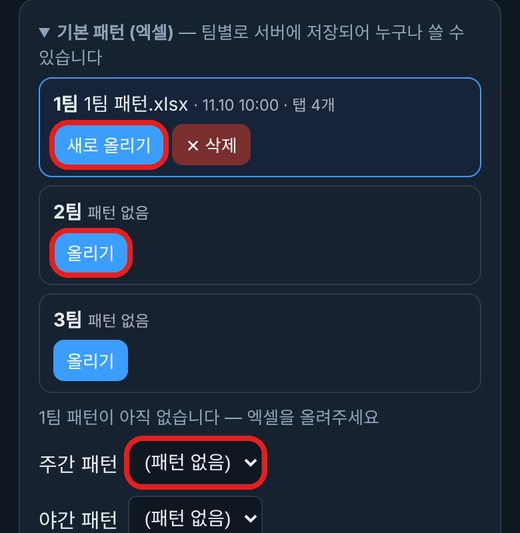
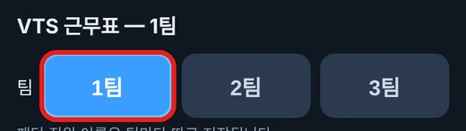
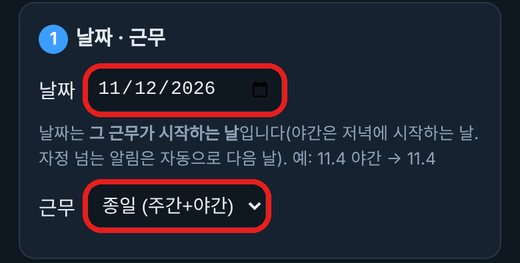
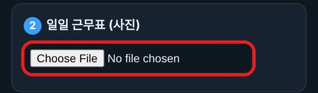
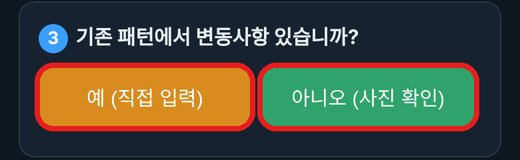
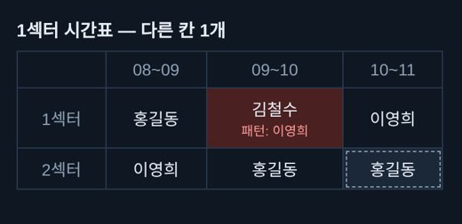
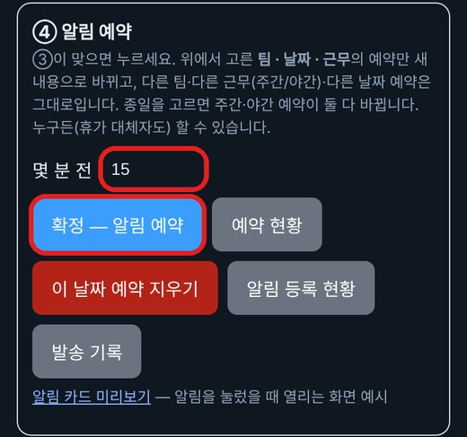

당일 근무표 사진을 올리면 직원 모두에게 알림이 예약됩니다. 누구든(휴가 대체자도) 올릴 수 있습니다. 약 2분.
기본 패턴 엑셀은 팀마다 평소 근무 배치(누가 어느 섹터 몇 시)를 적어 둔 파일입니다. 사진 인식률을 높이기 위한 것으로, 올려 둔 패턴과 근무표 사진을 비교해서 정확도를 높입니다. 팀별로 서버에 저장되어 누구나 가져다 쓰므로 한 번만 올려 두면 됩니다. 이미 올려져 있으면 이 단계는 건너뛰세요.
주간 패턴 / 야간 패턴 칸은 올린 엑셀 안의 어느 탭을 쓸지 고르는 곳입니다. 오늘 근무 인원수에 맞는 탭을 주간·야간 각각 고르세요.

엑셀 파일은 팀마다 1개입니다. 파일 안에 탭(시트)이 여러 개 있고, 탭은 근무 인원수별 패턴입니다(예: 탭 4개). 주간·야간 파일을 따로 올리는 것이 아닙니다.
근무 패턴이 바뀌었을 때는 ① 패턴 목록의 다운로드 버튼으로 현재 엑셀 양식을 받아 ② 내용을 수정한 뒤 ③ "새로 올리기"로 다시 올려 주세요. (처음이면 "올리기") 올리고 나면 파일 이름·올린 시각·탭 수가 보입니다. 잘못 올렸으면 삭제 후 다시 올립니다. 팀 코드가 필요할 수 있습니다(팀장에게 문의).
앱 아래 ⚙ 설정 → 근무표 올리기 버튼을 누릅니다. (새 창으로 열립니다)
※ 설정에서 앱 등록이 되어 있어야 합니다. 안 되어 있으면 위쪽에 빨간 안내가 뜹니다.
맨 위에서 내가 올릴 팀을 누릅니다. 휴가 대체로 다른 팀 근무표를 올릴 때는 그 팀을 고르세요.

날짜는 그 근무가 시작하는 날입니다(야간은 저녁에 시작하는 날). 근무는 주간 / 야간 / 종일 중에서 고릅니다.

② 일일 근무표(사진)에서 파일 선택을 눌러 근무표 사진을 고릅니다. 글자가 선명하고 표 전체가 나오게 찍어 주세요.

"아니오(사진 확인)" — 기본 패턴대로 근무하는 평소의 날. 사진을 읽어 패턴과 맞는지 확인합니다.
"예(직접 입력)" — 직원끼리 수기 번호를 서로 바꾸는 것이 아니라, 특정 시간대만 조퇴나 특별한 사정으로 근무가 바뀐 날. 이때는 "예"를 누르고 바뀐 칸을 직접 고쳐 주세요.

"아니오"를 누르면 시간표가 나옵니다. 사진과 기본 패턴이 다른 칸은 빨간색으로 표시됩니다. 빨간 칸을 누르면 패턴 / 사진 중 어느 쪽을 쓸지 바뀝니다(처음엔 패턴). 점선 칸은 사진에서 못 읽어 패턴을 그대로 쓴 칸입니다. 빨간 칸만 확인하면 됩니다.

몇 분 전(보통 15)을 확인하고 확정 — 알림 예약을 누릅니다. 같은 팀·날짜·근무의 예약만 새로 바뀝니다. 끝나면 초록 글씨로 완료 안내가 나옵니다.

사진이 인식이 안 돼요 → 표 전체가 크게 나오게 다시 찍어 보세요.
빨간 안내(앱 등록 필요)가 떠요 → 설정에서 앱 등록을 먼저 하세요.